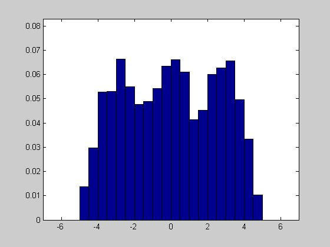
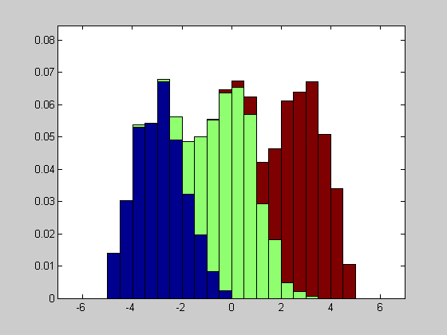

Contents
% HISTGDEMO Demonstration of HISTG % EXAMPLE : histgdemo (Oh, the FEX code metrics..) % AUTHOR : Dimitri Shvorob, dimitri.shvorob@vanderbilt.edu, 4/10/07
Set grouped-histogram display options
clear opt opt.pmin = 1; % lower cut-off percentile opt.pmax = 99; % upper cut-off percentile opt.xmin = -7; % lower cut-off x-value opt.xmax = 7; % upper cut-off x-value opt.dx = .5; % x-increment
Generate groups (shifted Gaussians)
n = 1000; x = [-3 + randn(n,1); randn(n,1); 3 + randn(n,1)]; c = kron((1:3)',ones(n,1));
'Standard' histogram
figure, histf(x,opt)
'Grouped' histogram
figure, histg(x,c,opt)